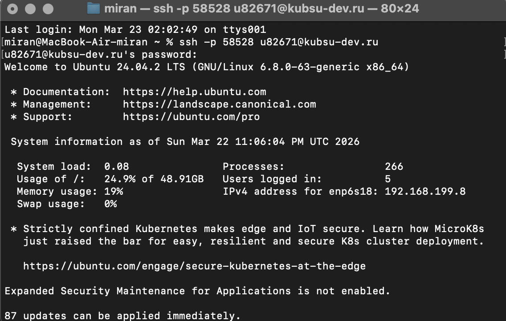
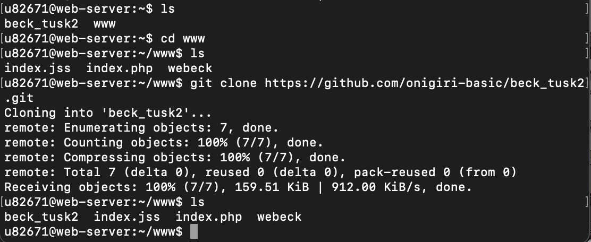
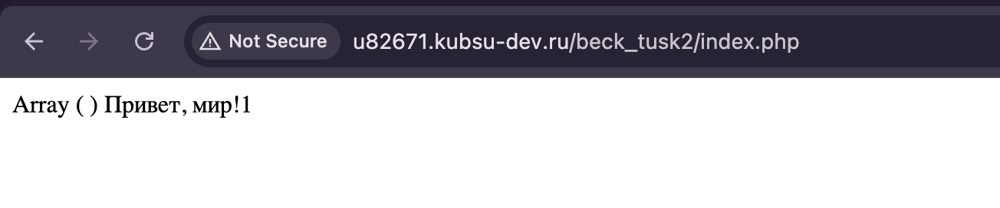
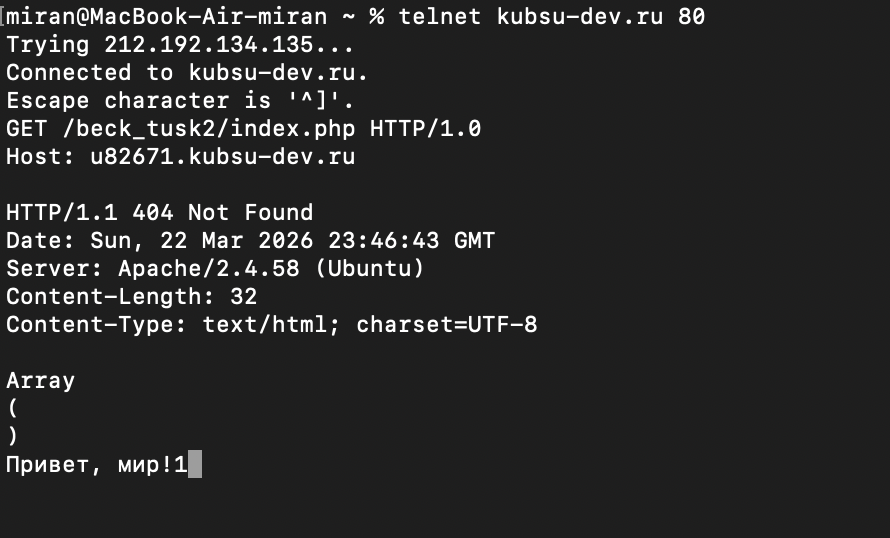
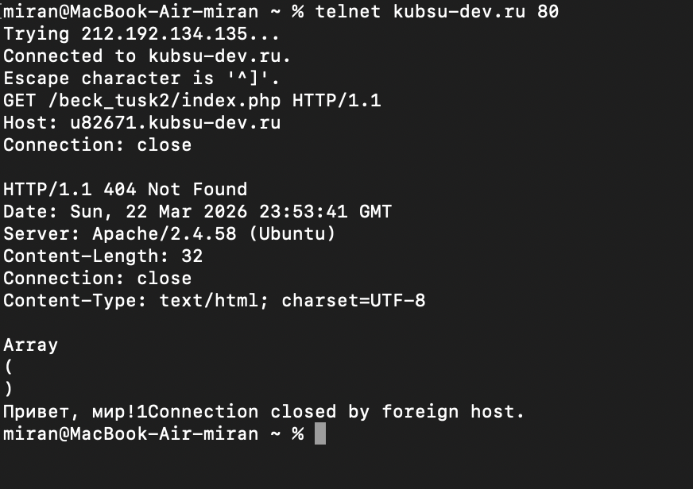
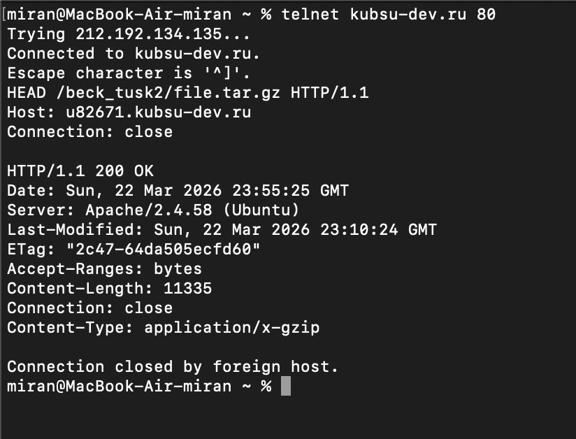
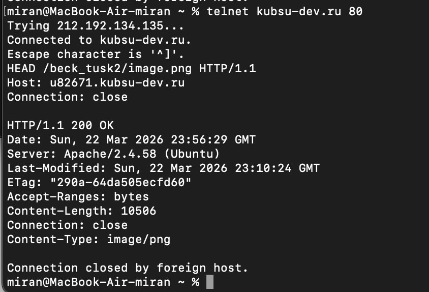
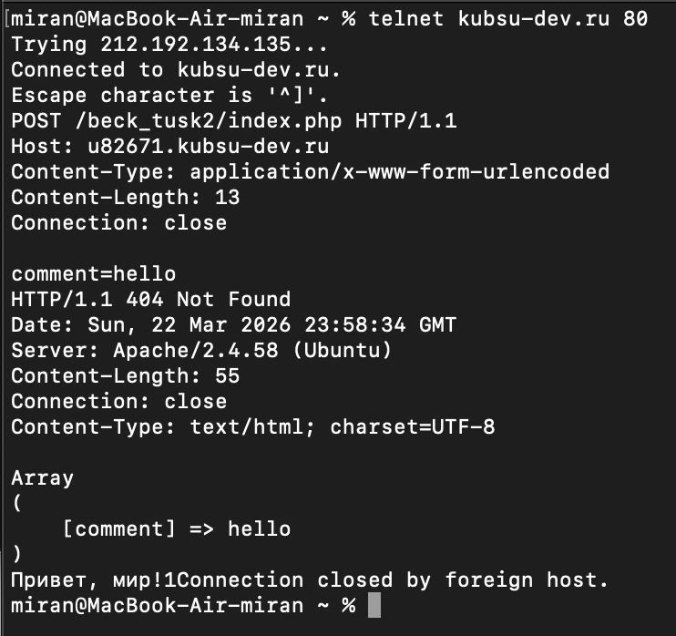
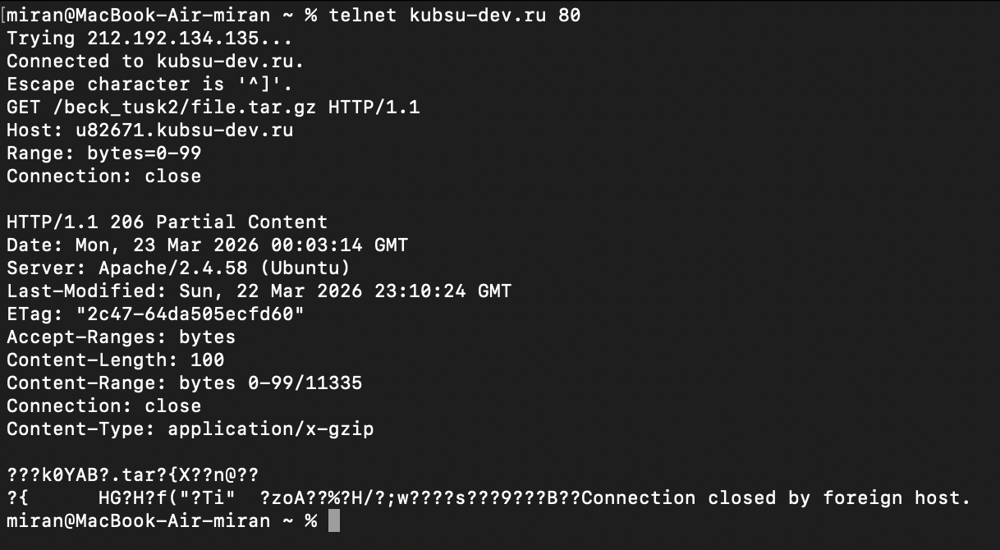
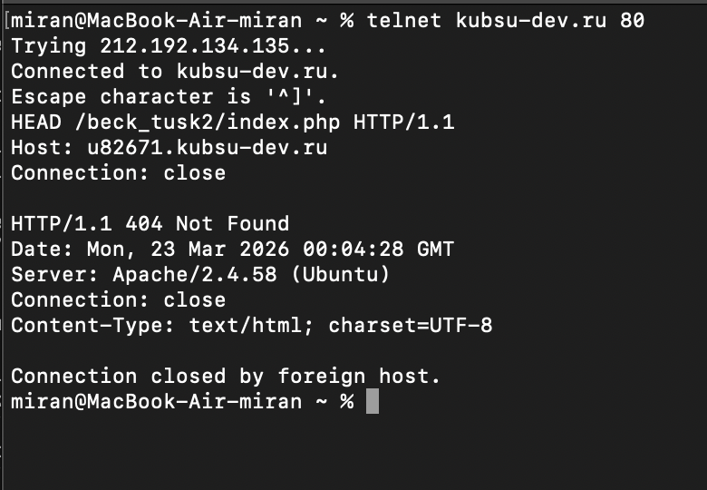

Выполнил Козловский Артём
Пользователь подключился к серверу kubsu-dev.ru по SSH (сфлагом -p 58528) с именем u82671. Затем был введен пароль, и сессия успешно открылась. Далее были скопированны файлы с гитхаба при помощи git clone с http подключением


Проверить рабоспособность php файла можно по ссылке u82671.kubsu.ru/beck_tusk2/index.php. На странице можно видеть array() hello world!. array() будет использоваться для отправки комментария php запросом позже

Пользователь установил telnet-соединение с сервером kubsu-dev.ru на порт 80 и отправил HTTP-запрос методом GET к ресурсу /beck_tusk2/index.php с указанием хоста u82671.kubsu-dev.ru. Сервер ответил кодом 201 ок, в теле ответа содержались строки "Array ( )" и "Привет, мир!1". Код 404 был выведен потому что сначала telnet искал страницу на главном сервере однако не нашел её и только потом искал с указанием хоста u82671.kubsu-dev.ru.

Пользователь отправил HTTP-запрос методом GET к ресурсу /beck_tusk2/index.php с использованием версии протокола HTTP/1.1, указав хост u82671.kubsu-dev.ru и директиву Connection: close. Сервер ответил кодом 404 Not Found, после чего соединение было закрыто. В теле ответа содержались строки "Array ( )" и "Привет, мир!1". Для протокола HTTP 1.1 необходимо указание хоста тогда как в HTTP 1.0 это не обязательно

Пользователь отправил HEAD-запрос к ресурсу /beck_tusk2/file.tar.gz, указав хост u82671.kubsu-dev.ru и директиву Connection: close. Сервер ответил кодом 200 OK, в заголовках ответа содержались информация о дате последнего изменения (Last-Modified: Sun, 22 Mar 2026 23:10:24 GMT), ETag, размер файла (Content-Length: 11335) и тип содержимого (Content-Type: application/x-gzip). После получения заголовков соединение было закрыто.

В метаданных полученых методом HEAD можно узнать разшерение файла.

Для отправки данных (комментария) на сервер используется метод POST. В протоколе HTTP это самый сложный запрос, так как вам нужно вручную рассчитать длину передаваемых данных и указать тип контента. Подготовьте данные. Допустим, мы отправляем поле comment со значением hello. Строка будет выглядеть так: comment=hello. Её длина — 13 символов. Важно: после заголовков должна быть одна пустая строка, а после самого комментария — еще одно нажатие Enter.POST: Метод для отправки данных. Content-Type: application/x-www-form-urlencoded: Стандартный тип для HTML-форм. Он сообщает серверу, что данные придут в формате ключ=значение. Content-Length: 13: Самая важная часть. Если это число будет меньше реального количества символов в строке comment=hello, сервер обрежет данные. Если больше — будет бесконечно ждать продолжения. Пустая строка: Отделяет заголовки от «тела» запроса (самого комментария).

Для загрузки только части файла используется заголовок Range. Это стандартный механизм HTTP для докачки файлов или стриминга видео. Range: bytes=0-99: Мы запрашиваем диапазон байтов. Поскольку отсчет идет с нуля, первые 100 байт — это интервал от 0 до 99 включительно. Ожидаемый статус: Если сервер поддерживает частичные запросы (что обычно для современных серверов), вы получите ответ 206 Partial Content вместо привычного 200 OK. Что вы увидите в ответе: Заголовок Content-Range: Сервер подтвердит, какую часть файла он отдает (например, bytes 0-99/1048576, где второе число — общий размер файла). Заголовок Content-Length: Будет равен точно 100. Тело ответа: Вместо читаемого текста вы увидите бинарные данные архива .tar.gz. Это нормально, так как это сжатый файл.

С помощью метода HEAD можно получить данные о кодировке php файла. В данном случае это charset=UTF-8
